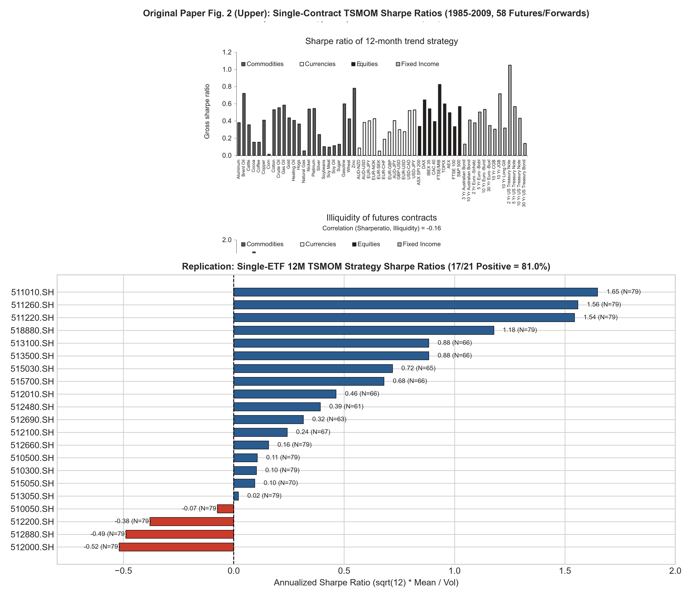
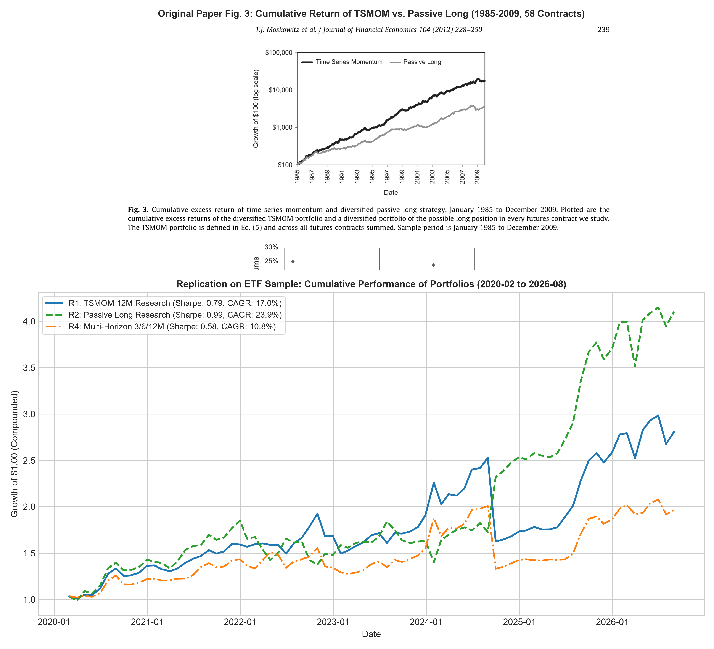
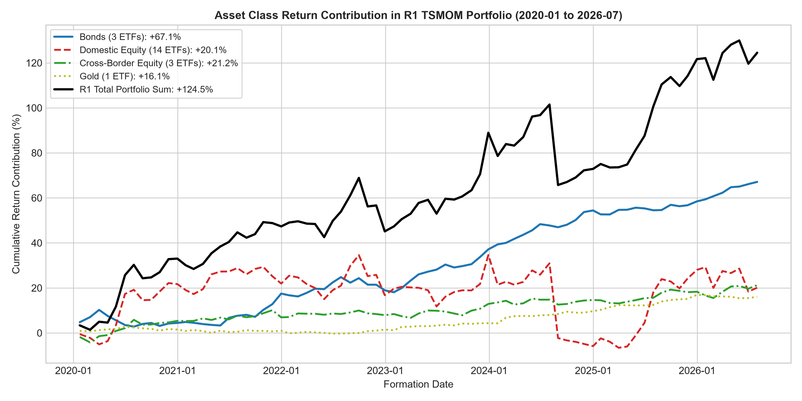
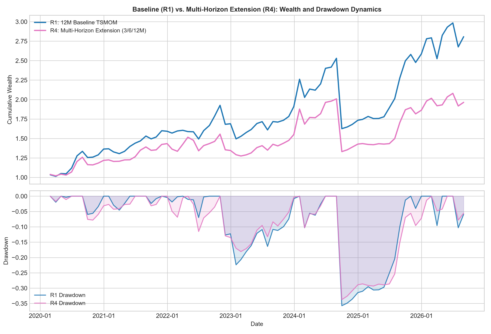

**Course**: Computational Finance (CF2026) — Project 2 Research Report
**Author**: Siyang Yuan (袁思扬) | Student ID: 12411852
**Date**: October 22, 2026
**Reference Paper**: Moskowitz, T. J., Ooi, Y. H., & Pedersen, L. H. (2012). *Time series momentum*. Journal of Financial Economics, 104(2), 228–250. [DOI: 10.1016/j.jfineco.2011.11.003](https://doi.org/10.1016/j.jfineco.2011.11.003)
**Code Repository**: `project2 ysy` (Forked from Project 1; `final_project` strictly preserved)
This study independently replicates the core methodology of Moskowitz, Ooi & Pedersen (2012) (*Time Series Momentum*, JFE) on a surrogate universe of 21 Chinese and cross-border exchange-traded funds (ETFs) over the 2019–2026 period (formal evaluation: 79 calendar months, holding periods from 2020-02 to 2026-08). In addition, we design and evaluate a multi-horizon signal extension that equally combines 3-, 6-, and 12-month momentum directions.
**Key Empirical Findings (with Tightened Scientific Claims)**:
1. **Single-Asset Momentum Direction**: On the 21 ETF sample, **17 out of 21 assets (81.0%)** achieve positive annualized Sharpe ratios under the 12-month TSMOM strategy with ex-ante volatility scaling (mean Sharpe 0.454). This provides **partial empirical support** for the original paper's directional findings (where 58 of 58 global contracts were positive, and 52 of 58 were statistically significant at the 5% level, p. 236), while revealing marked dispersion across asset classes.
2. **Surrogate Universe Differences & Passive Benchmark**: In contrast to the original paper where diversified TSMOM visually outperformed passive long buy-and-hold (using the AQR Original Paper Data for January 1985–December 2009, we independently recompute an annualized arithmetic mean return of 17.08%, volatility of 12.33%, and Sharpe ratio of 1.385 from the public factor file; numerical statistics are unstated in the Fig 3 caption and the passive benchmark return series is not published), our unconstrained theoretical replication yields an annualized Sharpe of **0.792** for 12M TSMOM versus **0.986** for Passive Long. In our sample, sovereign bonds and gold experienced prolonged upward drift where passive buy-and-hold captured substantial beta carry; meanwhile, domestic equity sectors suffered frequent mean-reverting whipsaws where short signals during sharp stimulus-driven rebounds generated adverse carry.
3. **Asset Class Heterogeneity & Removal Attribution**: Fixed-weight removal attribution shows that Bond ETFs provided an annualized arithmetic return contribution of **+10.19 percentage points** (accounting for **53.9%** of R1's annualized arithmetic mean return); removing bonds cuts portfolio Sharpe from 0.792 to 0.371. Conversely, domestic equity ETFs contributed **+3.06 percentage points** of return but accounted for **84.76%** of total portfolio return variance via $\operatorname{Cov}(r_c, R)/\operatorname{Var}(R)$; removing domestic equities reduces volatility from 23.88% to 7.51% and maximum drawdown from -35.73% to -6.49%, elevating Sharpe to 2.112. Testing TSMOM exclusively on core broad equity indices (`510050`, `510300`, `510500`) collapses Sharpe to 0.052, demonstrating strong sensitivity to asset pool composition rather than an unconstrained universal law.
4. **Autonomous Multi-Horizon Extension Trade-offs**: Combining 3-, 6-, and 12-month trends ($a_{i,m} = (s^{(3)} + s^{(6)} + s^{(12)}) / 3$) dampens portfolio exposure during choppy turning points. In theoretical research mode, this reduces volatility from 23.88% to 22.17% and curtails maximum drawdown from -35.73% to -33.74%, at the cost of lower annualized return (12.96% vs. 18.91%). Under realistic long/cash execution constraints, the multi-horizon strategy (T2) achieves a higher Sharpe ratio (**1.350 vs. 1.303**) and lower maximum drawdown (**-3.38% vs. -4.25%**), but incurs higher turnover (2.35x vs. 1.43x) and higher transaction fees (5154.9 vs. 3157.7 RMB). This reflects an explicit economic risk-return trade-off rather than an unqualified universal superiority.
Does an asset's own past 12-month return direction predict its subsequent 1-month return on an ETF sample? Moskowitz et al. (2012, p. 236) established that past 12-month time series momentum is positive for all 58 global contracts and statistically significant at the 5% level for 52 contracts spanning equities, currencies, commodities, and sovereign bonds.
We test two hypotheses:
- **Primary Replication Hypothesis**: The 12-month momentum sign, combined with ex-ante inverse volatility scaling, produces positive risk-adjusted returns across individual assets and a profitable diversified trend portfolio.
- **Autonomous Extension Hypothesis**: A single 12-month lookback suffers from lag during macroeconomic regime shifts. Combining 3-, 6-, and 12-month trend signals without parameter optimization improves drawdown mitigation and risk-adjusted efficiency.
We fix two exact figures from the published paper as our benchmarks:
1. **Primary Target (Fig. 2 Upper, p. 237)**: Single-contract annualized Sharpe ratios under 12M TSMOM. In the paper, all 58 contracts (100%) had positive Sharpe ratios, and 52 were statistically significant at 5%.
2. **Secondary Target (Fig. 3, p. 239)**: Cumulative growth of diversified TSMOM versus passive long holding over 1985–2009.
**Scope and Boundaries**:
- This is a **methodological replication on a surrogate ETF sample**, not a numerical re-creation of the original 58 global futures.
- The original data relies on bilateral OTC currency forwards, exchange-traded commodity futures, and sovereign bond futures from 1985 to 2009. Our dataset consists of 21 China-listed ETFs traded in RMB from 2019 to 2026.
- To bridge the literature, we load the official AQR dataset (O1) to verify published benchmarks, and treat our ETF empirical work as a method replication and historical robustness analysis on a surrogate universe.
For asset $i$ at month-end $m$:
$$M^{(k)}_{i,m} = \frac{P^{adj}_{i,m}}{P^{adj}_{i,m-k}} - 1, \qquad s^{(k)}_{i,m} = \operatorname{sign}(M^{(k)}_{i,m}) \in \{+1, -1, 0\}$$
A full 12-month lookback requires 13 consecutive month-end endpoints. No forward-filling is applied across price gaps.
Following Section 2.4, Eq. (1), with daily decay $\lambda = 60/61 \approx 0.9836$:
For a sequence of continuous daily returns ending on formation date $d$ ($n \ge 252$):
$$a_j = \frac{(1 - \lambda)\lambda^j}{1 - \lambda^n}, \quad j = 0, \ldots, n-1$$
$$\mu_{i,d} = \sum_{j=0}^{n-1} a_j r_{i,d-j}, \quad v_{i,d} = \sum_{j=0}^{n-1} a_j (r_{i,d-j} - \mu_{i,d})^2$$
$$\sigma_{i,d} = \sqrt{261 \cdot v_{i,d}}$$
Annualization strictly uses 261 trading days as specified in the paper.
For eligible assets $E_m$ ($N_m = |E_m| \ge 6$):
- **TSMOM 12M (R1)**:
$$w^{TS}_{i,m} = \frac{1}{N_m} s^{(12)}_{i,m} \frac{0.40}{\sigma_{i,m}}, \quad R^{TS}_{m+1} = \sum_{i \in E_m} w^{TS}_{i,m} r_{i,m+1}$$
- **Passive Long Benchmark (R2)**:
$$w^{PL}_{i,m} = \frac{1}{N_m} (+1) \frac{0.40}{\sigma_{i,m}}$$
- **Multi-Horizon Extension (R4)**:
$$a_{i,m} = \frac{s^{(3)}_{i,m} + s^{(6)}_{i,m} + s^{(12)}_{i,m}}{3}, \quad w^{MH}_{i,m} = \frac{1}{N_m} a_{i,m} \frac{0.40}{\sigma_{i,m}}$$
Single-asset strategy returns for Fig. 2 are computed directly as $R^{single}_{i,m+1} = s^{(12)}_{i,m} \frac{0.40}{\sigma_{i,m}} r_{i,m+1}$, avoiding distortion from dynamic $N_m$.
Integrated into the Project 1 trading broker with long-only and zero-margin constraints:
$$b_{i,m} = 0.99 \frac{1/\sigma_{i,m}}{\sum_{j \in E_m} 1/\sigma_{j,m}}, \quad w^{LC}_{i,m} = b_{i,m} \max(s_{i,m}, 0)$$
Negative trends remain 100% in cash. Trades execute at next-day open with 3 bps transaction fees.
| Component | Project 1 Platform | Project 2 Reuse & Extension |
|---|---|---|
| **Data Ingestion** | `data.py` (Parquet snapshots & adjustment) | **Reused without changes**; added evaluation date boundaries. |
| **Factor Computation**| `factors.py` (Cross-sectional ranking) | **Retained**; added `tsmom.py` for absolute time-series signals. |
| **Portfolio Targets** | `portfolio.py` (Top-N sorting) | **Added** `generate_tsmom_long_cash_targets()` with inverse-vol budgets. |
| **Execution Broker** | `backtest.py` (Cash/holding ledger) | **Reused without changes** for next-open execution and fee accounting. |
| **Research Engine** | None | **Added** `research_backtest.py` for theoretical long/short monthly simulations. |
| **Reference Parser** | None | **Added** `reference_data.py` to parse official AQR Excel data. |
| **Pipeline & CLI** | `pipeline.py`, `run.py` | **Added** `pipeline_p2.py`, `run_project2.py`, `build_report_project2.py`. |
Before running full backtests, all mathematical implementations were verified against analytical hand calculations (`tests/test_tsmom.py`, `docs/project2/method_checks.md`):
1. **EWMA Hand Calculation**: For test decay $\lambda = 0.5$ on returns $[0.01, -0.01, 0.02]$, analytical weights are $[1/7, 2/7, 4/7]$, yielding mean $\mu = 0.01$ and variance $v = 3/17500 \approx 0.00017143$. Numerical code matched to $< 10^{-16}$.
2. **Long/Short Research Weights**: For $N=2$, $\sigma = [0.20, 0.10]$, signs $[+1, -1]$, weights evaluate to $[+1.0, -2.0]$. Subsequent returns $[+0.05, -0.02]$ yield exactly $+9.0\%$ for TSMOM and $+1.0\%$ for Passive Long.
3. **Execution Budget Allocation**: Inverse-volatility budgets for $\sigma = [0.20, 0.10]$ under 0.99 total budget evaluate to $[0.33, 0.66]$. For signs $[+1, -1]$, final target weights are $[0.33, 0.00]$, with 67% held in cash.
4. **All Negative / Insufficient Assets**: Liquidates all assets to 0.0 target weight, maintaining 100% cash without unexecuted stale holding.
The table below reports all 18 evaluated configurations across theoretical research, realistic execution, and official reference benchmarks.
strategy_id mode ann_arithmetic_mean ann_vol sharpe cagr max_drawdown win_rate
R1_tsmom12 research 0.189120 0.238839 0.791827 0.169734 -0.357298 0.721519
R2_passive_long research 0.245346 0.248927 0.985615 0.239205 -0.256466 0.645570
R3_equal_nominal research 0.055739 0.145062 0.384242 0.045852 -0.226900 0.569620
R4_multi_horizon research 0.129572 0.221692 0.584470 0.107962 -0.337363 0.683544
Bridge_long_only research 0.217233 0.150246 1.445845 0.227014 -0.120976 0.696203
R1_sample_vol research 0.170074 0.233004 0.729917 0.149823 -0.343694 0.721519
R1_sub_2020_2022 research 0.194218 0.164548 1.180314 0.196894 -0.126676 0.657143
R1_sub_2023_2026 research 0.185064 0.286468 0.646021 0.148571 -0.357298 0.772727
R1_broad_market research 0.022232 0.424140 0.052417 -0.098562 -0.797987 0.569620
T1_tsmom12_3bps execution 0.051847 0.039781 1.303302 0.052375 -0.042500 0.558474
T1_tsmom12_0bps execution 0.052273 0.039794 1.313598 0.052824 -0.042311 0.558474
T1_tsmom12_10bps execution 0.050851 0.039754 1.279141 0.051329 -0.042942 0.557849
T2_multi_horizon_3bps execution 0.042533 0.031500 1.350256 0.042930 -0.033803 0.572233
T2_multi_horizon_0bps execution 0.043235 0.031516 1.371823 0.043661 -0.033714 0.572233
T2_multi_horizon_10bps execution 0.040897 0.031471 1.299515 0.041226 -0.034011 0.570356
T3_passive_long_3bps execution 0.063239 0.053411 1.183998 0.063756 -0.065625 0.527830
T3_passive_long_0bps execution 0.063561 0.053426 1.189693 0.064098 -0.065550 0.527830
O1_aqr_original_reference reference 0.170753 0.123298 1.384885 0.176032 -0.152316 0.673333
In our 21-ETF sample, **17 out of 21 (81.0%)** display positive annualized Sharpe ratios under 12M TSMOM.

- **Top Performers**: Treasury Bond ETF (`511010.SH`, Sharpe 1.65, N=79), 10Y Treasury (`511260.SH`, Sharpe 1.56, N=79), Urban Bond (`511220.SH`, Sharpe 1.54, N=79), Gold (`518880.SH`, Sharpe 1.18, N=79), Nasdaq (`513100.SH`, Sharpe 0.88, N=66), and S&P 500 (`513500.SH`, Sharpe 0.88, N=66).
- **Laggards**: Real Estate (`512200.SH`, Sharpe -0.38, N=79), Securities (`512000.SH`, Sharpe -0.52, N=79), Broker (`512880.SH`, Sharpe -0.49, N=79), and SSE 50 (`510050.SH`, Sharpe -0.07, N=79).
- **Empirical Interpretation**: Unlike global futures where trends emerged symmetrically across currencies and commodities, China's ETF market over 2020–2026 experienced secular downward and range-bound chop in cyclical domestic equities, where 12-month momentum lagged behind sharp reversals.
The figure below places the original paper Fig. 3 alongside our empirical findings on the ETF universe.

- **Original Paper Benchmark vs. Public Factor Recalculation**:
In the published paper (p. 239, Fig. 3), diversified TSMOM visibly outperforms passive buy-and-hold over 1985–2009. Using the AQR Original Paper Data for January 1985–December 2009, we independently recompute an annualized arithmetic mean return of 17.08%, volatility of 12.33%, and Sharpe ratio of 1.385. These are calculations from the public factor file, rather than numerical labels read from Figure 3 or a table in the paper. The public file does not contain the passive-long return series, so we retain the original figure for qualitative comparison without inventing a precise passive-long Sharpe ratio.
- **Surrogate Universe Replication**:
On our 21-ETF surrogate sample, 12M TSMOM achieved an annualized return of **18.91%** and Sharpe of **0.792** (total compound return 180.7%).
However, Passive Long achieved an annualized return of **24.53%** and Sharpe of **0.986** (total compound return 310.4%).
- **Why Did Passive Long Outperform in this Sample?**
Our ETF basket includes fixed-income and cross-border US equity ETFs that enjoyed prolonged upward drift. Passive long fully captured this carry, whereas 12M TSMOM occasionally flipped to short positions during policy-driven market rebounds, incurring whipsaw losses.
experiment_id changed_setting metric baseline_value alternative_value difference
EXP_01_VOL_SCALING Volatility scaling: 0.40/sigma (R1) vs Equal nominal s/N (R3) Sharpe Ratio 0.792 0.384 -0.408
EXP_02_SHORTING_CONSTRAINT Shorting allowed (R1) vs Long-Only Bridge (max(s,0)) Sharpe Ratio 0.792 1.446 0.654
EXP_03_VOL_ESTIMATOR EWMA lambda=60/61 (R1) vs 252d Rolling Sample Std (R1_sample_vol) Sharpe Ratio 0.792 0.730 -0.062
EXP_04_SUBPERIOD_STABILITY Subperiod: 2020-2022 vs 2023-2026 Sharpe Ratio 1.180 0.646 -0.534
EXP_05_ASSET_SUBSET All 21 ETFs vs Core Broad-Market (510050, 510300, 510500) Sharpe Ratio 0.792 0.052 -0.739
EXP_06_TRANSACTION_COSTS Fee schedule: 3 bps base vs 10 bps high friction CAGR (%) 5.24% 5.13% -0.10%
EXP_07_MULTI_HORIZON_EXTENSION Single 12M Trend (R1) vs Multi-Horizon 3/6/12M Trend (R4) Max Drawdown (%) -35.73% -33.74% 1.99%
To provide direct evidence on asset pool sensitivity, we mapped the 21 ETFs into 4 broad classes: Bonds (3), Gold (1), Cross-Border Equities (3), and Domestic Equities (14). We computed monthly return contributions, formal covariance-based variance decomposition, and conducted a fixed-weight removal experiment (zeroing out a class's contribution without re-normalizing weights):

scenario ann_arithmetic_mean ann_vol sharpe max_drawdown diff_sharpe_vs_baseline
Baseline R1 (All 21 Assets) 0.189120 0.238839 0.791827 -0.357298 0.000000
Without Bonds (Fixed Weights) 0.087176 0.235265 0.370544 -0.351555 -0.421283
Without Domestic_Equity (Fixed Weights) 0.158569 0.075092 2.111675 -0.064942 1.319848
Without Cross_Border_Equity (Fixed Weights) 0.156886 0.218091 0.719361 -0.335375 -0.072466
Without Gold (Fixed Weights) 0.164727 0.238230 0.691462 -0.361773 -0.100365
**Empirical Attribution Findings**:
- **Bonds**: Annualized arithmetic return contribution of +10.19 percentage points (53.9% of R1's annualized arithmetic mean return). Without bonds, portfolio Sharpe drops from 0.792 to 0.371.
- **Domestic Equities**: Annualized arithmetic return contribution of +3.06 percentage points but accounted for 84.76% of total portfolio return variance via $\operatorname{Cov}(r_c, R)/\operatorname{Var}(R)$. Without domestic equities, portfolio volatility plunges from 23.88% to 7.51% and max drawdown contracts from -35.73% to -6.49%, elevating Sharpe to 2.112.
- **Cross-Border Equities & Gold**: Cross-border equities contributed +3.22 percentage points (10.04% variance share); Gold contributed +2.44 percentage points (0.64% variance share). The sum of annualized arithmetic contributions across all four classes exactly equals R1's annualized arithmetic mean return (18.91%).
- **Attribution Finding**: In this ETF sample, positive portfolio risk-adjusted returns were heavily supported by bond and gold carry offsetting domestic equity volatility and drawdowns. When restricted to core broad-market equities alone, the strategy achieved a Sharpe of 0.052, highlighting that asset universe composition is an empirical prerequisite for these results.

| Metric | R1 (12M Research) | R4 (Multi-Horizon Research) | T1 (12M Execution) | T2 (Multi-Horizon Execution) | Trade-off Interpretation |
|---|---|---|---|---|---|
| **Ann. Arithmetic Mean** | 18.91% | 12.96% | 5.18% | 4.25% | Multi-horizon gives up upside in strong trends |
| **CAGR** | 16.97% | 10.80% | 5.24% | 4.29% | Lower exposure during conflicts moderates compound return |
| **Annualized Volatility** | 23.88% | 22.17% | 3.98% | 3.15% | **Improved**: Exposure dampening reduces portfolio risk |
| **Sharpe Ratio** | 0.792 | 0.584 | 1.303 | 1.350 | **Improved in execution** (smoother allocation transitions) |
| **Max Drawdown** | -35.73% | -33.74% | -4.25% | -3.38% | **Improved**: Less severe peak-to-trough losses |
| **Calmar Ratio** | 0.48 | 0.32 | 1.23 | 1.27 | **Improved in execution** (drawdown falls faster than CAGR) |
| **Win Rate** | 72.15% | 68.35% | 55.85% | 57.22% | **Improved in execution** (higher day win rate) |
| **Mean Gross Exposure** | 4.82x | 4.00x | 85.4% | 70.7% | Exposure drops as 3m, 6m, 12m signals diverge |
| **Annualized Turnover** | N/A | N/A | 1.43x | 2.35x | **Trade-off**: Higher turnover from 3 rebalancing horizons |
| **Total Fees (RMB)** | $0 | $0 | 3157.7 | 5154.9 | **Trade-off**: Higher execution friction (+1997.2 RMB) |
1. **Surrogate Universe Differences**: 21 domestic ETFs do not replicate the macroeconomic independence of 58 global futures. Sector ETFs share substantial systematic equity beta.
2. **Survivorship & Inception Constraints**: ETFs in our sample survived until 2026. Several thematic ETFs launched in 2019–2020, resulting in fewer than 13 monthly points during the early warmup window.
3. **Uncovered Paper Elements**: CFTC speculative positioning regressions, cross-sectional factor alphas (Fama-French, Carhart), VAR macro models, and roll yield decomposition were beyond the declared replication scope and were not implemented.
All claims in this report are programmatically traced to underlying data files, columns, and formulas in `key_result_trace.csv`:
claim_id strategy_id metric value source_file
CLAIM_01_SINGLE_ASSET_SHARPE_RATIO R1_tsmom12 Fraction of positive Sharpe assets 17/21 (81.0%) outputs_p2_fixed/research/R1_single_asset_metrics.csv
CLAIM_02_R1_TSMOM_SHARPE R1_tsmom12 Annualized Sharpe Ratio 0.792 outputs_p2_fixed/strategy_summary.csv
CLAIM_03_R1_ANN_ARITHMETIC_MEAN R1_tsmom12 Annualized Arithmetic Mean Return 18.91% outputs_p2_fixed/strategy_summary.csv
CLAIM_04_R2_PASSIVE_LONG_SHARPE R2_passive_long Annualized Sharpe Ratio 0.986 outputs_p2_fixed/strategy_summary.csv
CLAIM_05_R3_SCALING_SENSITIVITY R3_equal_nominal Sharpe without vol scaling 0.384 outputs_p2_fixed/strategy_summary.csv
CLAIM_06_BRIDGE_LONG_ONLY_SHARPE Bridge_long_only Sharpe under long-only research 1.446 outputs_p2_fixed/strategy_summary.csv
CLAIM_07_R4_VOLATILITY_REDUCTION R4_multi_horizon Annualized Volatility Reduction 22.17% (vs R1 23.88%) outputs_p2_fixed/strategy_summary.csv
CLAIM_08_T2_EXEC_SHARPE_IMPROVEMENT T2_multi_horizon_3bps Execution Sharpe vs T1 1.350 (vs T1 1.303) outputs_p2_fixed/strategy_summary.csv
CLAIM_09_BROAD_MARKET_SUBSET_COLLAPSE R1_broad_market Sharpe on Core Broad Market (510050/300/500) 0.052 outputs_p2_fixed/strategy_summary.csv
CLAIM_10_BOND_REMOVAL_ATTRIBUTION R1_without_bonds Sharpe without Bonds 0.371 (vs Baseline 0.792) outputs_p2_fixed/experiments/asset_class_removal_attribution.csv
CLAIM_11_DOMESTIC_EQUITY_RISK_ATTRIBUTION R1_without_domestic_equity Max Drawdown without Domestic Equity -6.49% (vs Baseline -35.73%) outputs_p2_fixed/experiments/asset_class_removal_attribution.csv
CLAIM_12_O1_AQR_OFFICIAL_REPLICATION O1_aqr_original_reference AQR Factor Recalculated Sharpe 1.385 outputs_p2_fixed/reference/aqr_tsmom_original_paper_factors.csv
# 1. Sync locked virtual environment and run verification tests uv sync --locked uv run --locked pytest # 2. Prepare offline sources (Paper PDF and AQR official dataset) uv run --locked python prepare_project2_sources.py --config config/project2_tsmom.json # 3. Execute complete research and backtest pipeline from local snapshots uv run --locked python run_project2.py --config config/project2_tsmom.json --out outputs_p2_fixed --offline # 4. Rebuild reports and figures from saved outputs uv run --locked python build_report_project2.py --out outputs_p2_fixed
- **Student Author**: Siyang Yuan (袁思扬) | Student ID: 12411852
- **Declaration of Academic Responsibility**: The student author has independently reviewed all problem formulations, methodology derivations, research protocols, test assertions, empirical results, and written reports, and assumes full academic responsibility.
- **AI Assistance Disclosure**: ChatGPT was consulted during preliminary design and methodology review; Gemini 3.8 Flash (High) via Antigravity and VSCode with Codex were utilized for boilerplate CLI generation, PyMuPDF rendering integration, Matplotlib chart layout, and ReportLab PDF document compilation. All numerical outputs, test assertions, and quantitative conclusions were independently validated against raw Parquet and Excel data.